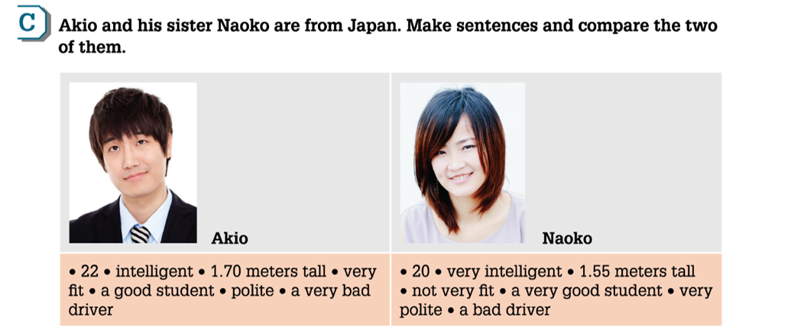

Comparing two things
adjective + -er + than
more + adjective + than
Short adjectives often take -er. Longer adjectives often use more.
cheap → cheaper · big → bigger
comfortable → more comfortable
BUSINESS ENGLISH / INTERNATIONAL BUSINESS
Compare your options, plan a trip,
and explore business travelers’ hotel reviews.
Business Plus 1 · Unit 6 · pp. 46–51
YOUR LEARNING ITINERARY
01 / GRAMMAR FOCUS · P. 47
Comparing people, places, and things
adjective + -er + than
more + adjective + than
Short adjectives often take -er. Longer adjectives often use more.
cheap → cheaper · big → bigger
comfortable → more comfortable
the + adjective + -est
the most + adjective
Superlatives usually take the and describe the highest degree within a group.
good → better → best
bad → worse → worst
as + adjective + as
not as + adjective + as
Use the base adjective to say that things are equally or less so.
This room is as comfortable as that one.
Practice comparisons using the character information on page 47.

Look at the chart. Are the sentences true or false? Correct the false sentences.
Use the original textbook figures below for this exercise.
| Measure | Indonesia | Singapore | Thailand |
|---|---|---|---|
| Size | about 2 million sq km | about 700 sq km | about 500,000 sq km |
| Population | 240 million | 5.3 million | 70 million |
| People per sq km | 130 | 7,800 | 140 |
| Average age | 30 years | 33 years | 35 years |
| Rent for a new apartment in the capital | Jakarta: $700 per month | Singapore: $1,800 per month | Bangkok: $800 per month |
02 / LISTENING & SPEAKING · P. 48
Discuss your travel habits and give your partner some advice.
Sinittra Tongsuk is talking to her Australian colleague, Tony. Tony is traveling on a long-haul flight for the first time next week. He is a bit nervous and asks Sinittra for advice. Listen to the conversation and choose Do or Don’t for each statement.
These activity steps and examples are supplementary teaching content.
You should take the train.
You could stay in a guest house.
should + base verb: give advice.
could + base verb: suggest an option.
Read the questions, then discuss your travel habits in small groups. Use the ideas and reasons below to help you.
| Questions about travel habits | Ideas | Reasons |
|---|---|---|
| Where do you like to spend your vacations? | the beach the mountains a city the countryside | exciting quiet adventure relaxing |
| What kind of vacation do you like? | adventure vacation backpacking beach vacation language course coach trip camping skiing | play sports meet people improve my English have fun |
| How do you like to travel? | by bus by car by coach by train by plane by bicycle on foot | fast cheap comfortable |
| What sort of place do you like to stay? | hotel guest house campsite friends | exciting interesting |
For our group, the most popular place to spend a vacation is … because …
The most popular kind of vacation is … because …
We like to travel by/on … because …
Most of us like to stay in/on/at/with … because …
03 / READING · P. 51
One hotel, four different experiences. Read the reviews, then find evidence to support your answers.
The hotel and reviews come from the supplied course material and are used for reading practice.
04 / KNOWLEDGE CHECK
Complete 12 grammar and reading questions, then submit to see explanations. These are supplementary exercises based on the course material.
Your answers are saved in this browser on this device. Download your results as JSON to share with your teacher. This page does not automatically upload student data.
RESOURCE DESK
Suggested timing: warm-up 5 minutes, comparisons 10 minutes, travel speaking and Track 32 listening 15 minutes, hotel reading 15 minutes, and practice with feedback 10 minutes. Adjust to your class.
Use this website with the textbook. The source presentation does not include the complete text on page 46. The original presentation is preserved and supplementary activities are identified.
To update the lesson, edit data/lesson.json, data/questions.json, or the website files on GitHub. GitHub Pages will republish. Original materials retain their authors’ rights.